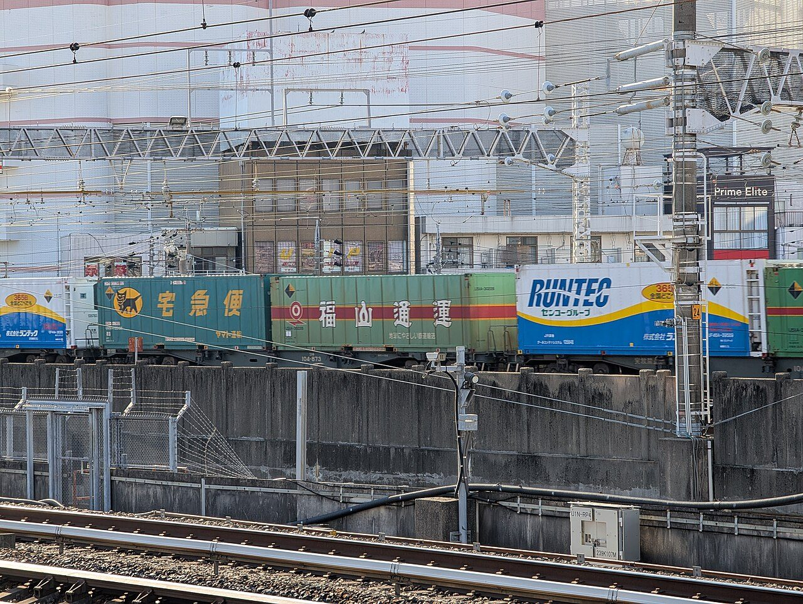
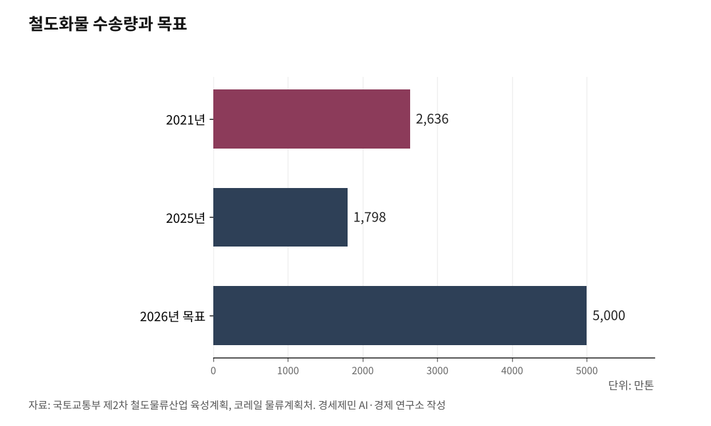

[KTX-SR 통합⓷] 화물고속기관차 등장, 서울-부산 논스톱 3시간 반
400㎞에 이틀 주는 약관... 화물 1%는 여기서 나왔다
발송 12시간에 수송 24시간에 인도 12시간, 코레일이 스스로 정한 값
철도화물 2021년 2636만톤 2025년 1798만톤, 정부 목표 5000만톤
새 기관차 7700호대는 시속 150㎞, 끌려가는 화차는 120㎞
AI경제저널=김갑봉 기자 | 밤에 멈추지 않고 달리면 의왕-부산신항 402.3㎞ 3시간 21분

철도 화물이 전체 물동량의 1%에 그친다. 까닭을 코레일 약관에서 찾을 수 있다. 400킬로미터를 나르는 데 이틀을 준다고 적혀 있다. 의왕에서 부산신항까지가 402.3킬로미터다. 이틀 걸리니 이용할 화주가 드물다.
로만시스가 상용 운전 기준 시속 150km를 달릴 수 있는 디젤전기기관차를 출시했다. 의왕에서 부산까지 3시간 20여분이면 충분하다. 과제는 논스톱 운행이 가능한 시간 대를 배정하는 일이다. 기후위기 시대 트럭킹을 철도로 대체할 수 있는 길이 열리는 셈이다.
목표는 5000만톤, 실적은 1798만톤
국토교통부는 2023년 4월 제2차 철도물류산업 육성계획을 확정하면서 2026년까지 철도화물 수송량을 5000만톤으로 늘리겠다고 했다. 2021년의 두 배다. 올해가 그 목표 연도다.
코레일 물류계획처 집계를 보면 2025년 수송량은 1798만톤이다. 목표의 36%에 그친다. 두 배로 늘리겠다고 한 4년 사이 2636만톤에서 1798만톤으로 32% 줄었다. 늘기는커녕 3분의 1이 날아갔다.
무엇이 줄었는지는 갈린다. 시멘트가 1044만톤에서 526만톤으로 반토막 났다. 건설경기가 꺾인 결과다. 기타 품목은 1546에서 597로 61% 사라졌다. 그런데 컨테이너는 937만톤에서 855만톤으로 8.8% 줄어드는 데 그쳤고, 2023년 784만톤을 바닥으로 2년째 오르고 있다.
더 긴 눈으로 보면 낙폭이 크다. 국토부 지표를 보면 수송거리를 곱한 실적이 1991년 1만4494백만톤·킬로미터에서 2021년 6757백만톤·킬로미터로 떨어졌다. 30년 사이 53%가 줄었다.

400킬로미터에 이틀
코레일 화물운송 안내에 운송기간이 적혀 있다. 발송기간은 화물을 받은 시점부터 12시간, 수송기간은 400킬로미터마다 24시간, 인도기간은 도착역에 닿은 시각부터 12시간이다.
국토교통부와 코레일이 밝힌 오봉역과 부산신항역 사이 거리가 402.3킬로미터다. 셋을 더하면 48시간, 곧 이틀이다. 회사가 스스로 이틀을 약속한 것이다.
대기 시간이 또 붙는다. 적재 통지를 받으면 컨테이너는 3시간 안에 실어야 하고, 열차가 닿으면 3시간 안에 내려 그날 안에 빼내야 한다. 저녁 6시 넘어 내리면 이튿날 오전 11시까지 기다린다.
값은 어떤가. 컨테이너 운임은 거리에 규격별 임률을 곱해 매긴다. 짐을 실은 20피트가 킬로미터당 516원, 40피트가 800원, 45피트가 946원이다. 빈 컨테이너는 그 74%를 받는다. 의왕에서 부산신항까지 40피트 한 개를 나르면 32만원꼴이다.
값만 보고 고르지는 않는다. 한국교통연구원이 2013년 화주와 물류기업 28곳을 조사한 결과를 보면, 운송수단을 고를 때 가격이 첫째이고 정시배달이 둘째였다. 그런데 제조회사만 따로 세면 정시배달이 첫째로 올라섰다. 물건을 만들어 파는 쪽에서는 값보다 시간이 앞섰다는 뜻이다.
같은 조사에서 철도가 강한 거리로 301킬로미터에서 400킬로미터를 꼽은 응답이 40.9%로 가장 많았다. 401킬로미터가 넘는다는 응답이 31.8%로 뒤를 이었다. 의왕과 부산신항 사이가 바로 그 거리다.
화물은 왜 비켜서나
같은 선로를 쓰는데 여객이 먼저다. 국토교통부는 2022년 장대화물열차 시험운행을 알리면서 경부선에 대피선로를 늘리는 방안을 검토하겠다고 했다. 까닭을 이렇게 밝혔다. 여객열차와 화물열차가 같이 다니려면 여객열차를 먼저 보내기 위한 우회선로가 있어야 한다는 것이다. 화물은 옆으로 비켜서서 여객을 보내고 다시 나온다. 그 사이 시간이 쌓인다.
같은 교통연구원 보고서는 그 사정을 이렇게 적었다. "여객에 비하여 화물은 운영자 입장에서 우선될 수 없는 현실이 더욱 철도화물 서비스 개선에 장애가 되고 있다."
비켜서는 것만이 아니다. 화차를 붙였다 뗀다. 경기 의왕 오봉역은 수도권 철도물류 거점으로 연간 200만여 톤을 취급한다. 화물열차가 평일 하루 55회 드나들고 하루 평균 1000여 칸을 연결하고 분리한다. 고속열차는 편성이 통째로 다니는데 화물은 칸 단위로 갈라 붙인다. 그 작업이 시간을 먹는다.
김태승 코레일 사장은 2026년 3월 31일 오봉역을 찾아 연결과 분리 작업을 살폈다. 코레일은 선로를 늘리고 시설을 고쳐 작업 횟수를 줄였다고 밝혔다.
기관차는 150, 화차는 120
차량은 바뀌고 있다. 2026년 8월 27일 로만시스가 창원공장에서 7700호대 특대형 디젤전기기관차 1호차를 내놨다. 통합 나흘 전이다.
최고 운행속도가 시속 150킬로미터, 설계속도가 165킬로미터, 최고출력이 4425마력이다. 국내 디젤전기기관차 가운데 견인력이 가장 세다. 무엇보다 우리 기술로 설계한 첫 차다. 7500호대는 미국 EMD 계열을, 7600호대는 GE 파워홀 계열을 들여와 로열티를 물고 썼는데 고장이 잦고 정비비가 많이 들었다.
1호차는 9월 7일부터 열흘 동안 5000킬로미터를 예비주행하고, 9월 18일부터 12월 7일까지 3만5000킬로미터를 더 달린다. 모두 4만 킬로미터 남짓을 시운전한 뒤 국토부 형식승인을 거쳐 12월에 코레일로 들어간다. 로만시스는 출고식에서 "공장 문을 나선 신규 디젤전기기관차 1호차는 우리 임직원들이 밤낮없이 땀 흘려 완성한 대한민국 철도 기술 자립의 상징"이라고 밝혔다.
2022년부터 넉 차례에 걸쳐 모두 47대를 수주했고 1차분 15대가 내년 4월까지 순차로 온다. 그때까지 화물을 끄는 것은 사진 속 4411호 같은 기존 기관차다.
그런데 기관차가 150킬로미터를 내도 열차는 그 속도로 못 간다. 끌려가는 화차가 120킬로미터급이기 때문이다. 국토부 목표도 거기 맞춰져 있다. 시속 120킬로미터급 고속화물열차 비중을 32%에서 50%로 늘리겠다는 것이다. 끄는 힘이 실리는 쪽을 앞질러 있다.
밤에 멈추지 않고 달리면
셈은 간단하다. 402.3킬로미터를 시속 120킬로미터로 멈추지 않고 달리면 3시간 21분이다. 앞뒤로 싣고 내리는 시간을 각각 3시간 얹어도 열 시간 안쪽이다. 약관이 약속한 48시간이 열 시간으로 줄어든다.
멈추지 않으려면 비켜설 일이 없어야 한다. 그래서 밤이다. 국토부와 코레일이 2022년 7월 19일 장대화물열차를 처음 시험운행한 시각도 새벽 4시 30분이었다. 오봉역을 떠나 김천역과 동대구역을 지나 부산신항역까지 갔다. 밤 아홉시에 의왕을 떠나면 새벽 한시 전에 부산신항에 닿는다. 화주는 낮에 하역하고 배송한다. 낮에 여객이 쓰는 선로를 밤에 놀리지 않으니 같은 자산을 스물네 시간 굴리는 셈이다.
싣는 힘도 커진다. 그때 시험한 열차는 50량 777미터로 KTX 두 배 길이였다. 지금 33량으로 66TEU, 약 800톤을 나르는 것을 50량 100TEU, 약 1200톤으로 늘리는 시험이었다.
터도 이미 닦여 있다. 의왕과 양산 ICD는 첨단 하역장비를 갖춘 몇 안 되는 시설이다. 수입 컨테이너가 가장 많이 흐르는 길도 경기와 부산항 사이로 전체의 14.3%인 60만TEU다.
국토부 계획에도 할 일이 이미 적혀 있다. 오봉과 부산신항 사이에 장대화물열차를 정기로 굴리고, 1회 수송량을 기존보다 50% 늘리고, 시멘트와 철강 용기를 컨테이너처럼 규격화하고, 트레일러를 통째로 화차에 싣는 피기백을 들여온다는 것이다. 화물열차 지연을 따지는 기준도 60분에서 여객과 같은 30분으로 조였다. 철도가 내뿜는 온실가스는 도로 수송과 견주면 3.8% 수준이다.
김태승 코레일 사장은 5월 취임 간담회에서 이렇게 말했다. "고속철도는 물론 새마을과 무궁화 등 일반철도, 전체 물동량의 1%에 그치는 화물수송 능력도 제고하는 계기가 되도록 하겠다." 그렇게 되면 철도가 문자 그대로 미래 육상교통수단으로 발돋움한다고 했다.
셋 가운데 하나가 9월 1일에 답을 냈다. 고속철도는 선로를 늘리지 않고 좌석을 얻었다. 남은 둘은 아직이다. 일반철도는 새 열차를 2029년까지 기다리고, 화물은 목표의 36%에 서 있다.
※ 이 기사는 AI 프로그램 클로드를 활용해 작성했습니다.
참고문헌
· 한국철도공사, "주요사업 물류수송 화물운송 및 운임", info.korail.com, 관리부서 물류마케팅처, 2026.9.14. 직접 열어 확인. 운송기간과 컨테이너 임률은 이 자료다. https://info.korail.com/info/contents.do?key=873
· 한국철도공사, "주요사업 물류수송 수송현황", info.korail.com, 관리부서 물류계획처, 2026.9.14. 직접 열어 확인. 2021~2025년 품목별 수송량은 이 자료이고 합계는 경세제민 AI·경제연구소가 계산했다. https://info.korail.com/info/contents.do?key=871
· "철도 물류수송 5년간 2배 늘린다…화물열차도 고속운행", 대한민국 정책브리핑(국토교통부), 2023.4.6., 2026.9.14. 직접 열어 확인. 제2차 철도물류산업 육성계획이다. https://www.korea.kr/news/policyNewsView.do?newsId=148913576
· 장병극, "로만시스, 특대형 디젤전기기관차 1호차 출고…종합 철도차량 제작사 '우뚝'", 철도경제신문, 2026.8.27., 2026.9.14. 직접 열어 확인. https://www.redaily.co.kr/news/articleView.html?idxno=17425
· 이경성, "코레일 김태승 사장, 오봉역 철도물류 작업 현장 점검", 물류신문, 2026.4.2., 2026.9.14. 직접 열어 확인. https://www.klnews.co.kr/news/articleView.html?idxno=320612
· 소민호, "김태승 코레일 사장 '9월이면 철도통합…좌석 2배 는다'", 헤럴드경제, 2026.5.17., 2026.9.14. 다음 전재본으로 직접 열어 확인. https://v.daum.net/v/20260517120155792
· 이종선, "KTX 2배 길이 화물열차 경부선 시범도입... 인천신항은 언제", 인천투데이, 2022.7.18., 2026.9.15. https://www.incheontoday.com/news/articleView.html?idxno=220089
· 민연주 외, "도로와 철도화물수송 경쟁력 분석을 통한 전환교통 대응방안", 한국교통연구원, 2013.10. 발간, 2026.9.14. ScienceON에서 초록 직접 열어 확인. 화주 조사와 의왕 ICD 대목은 이 자료다. https://scienceon.kisti.re.kr/srch/selectPORSrchReport.do?cn=TRKO201400002953
· 국토교통부 철도운영과, "철도화물수송 추이", e-나라지표, 2026.6.26. 갱신, 2026.9.14. 직접 열어 확인. https://www.index.go.kr/unity/potal/main/EachDtlPageDetail.do?idx_cd=1250
· 김갑봉, "[KTX-SR 통합⓶] KTX 느는 동안, 무궁화는 36% 줄고 새 차는 2029년", 2026.9.14, 경세제민 AI·경제 연구소 브리핑
사진 출처
· [대표사진] Syced, "Momotaro freight train going through Hamamatsu station (48158).jpg", 위키미디어 공용, CC0, https://commons.wikimedia.org/wiki/File:Momotaro_freight_train_going_through_Hamamatsu_station_(48158).jpg
※ 이 기사는 인공지능을 활용해 작성했습니다.
관련기사
- [KTX-SR 통합⓶] KTX 느는 동안, 무궁화는 36% 줄고 새 차는 2029년
- [에세이] 공부와 아부와 치부, 그리고 정읍역의 30초
- [KTX-SR 통합⓵] 예견된 성공, 고속철 통합... 남은건 지주회사
- [환황해 철도망⑧] 열차페리 1~3년, 해저터널 10년 뒤... 첫 단추는 인천신항 인입선
저작권자 © AI경제저널 무단전재 및 재배포, AI학습 및 활용 금지